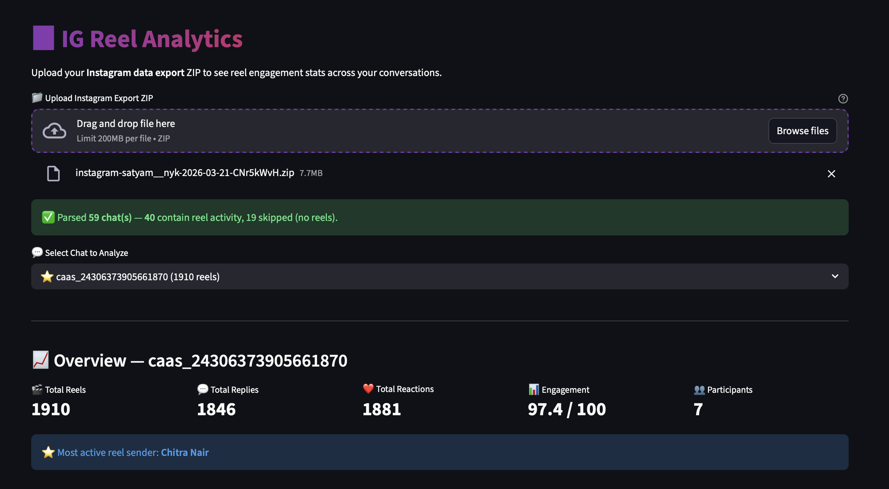
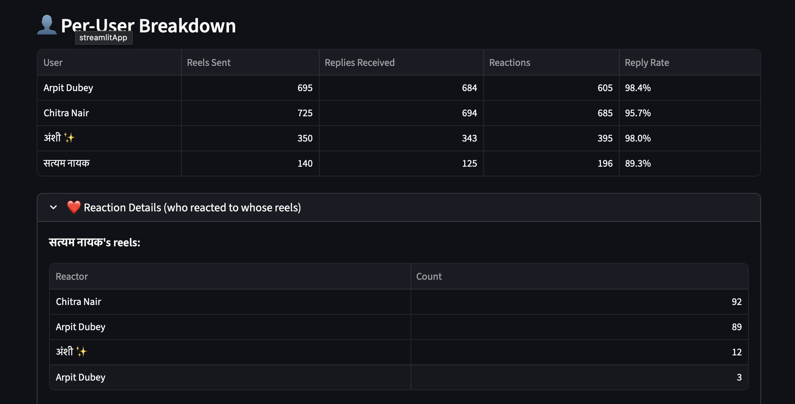
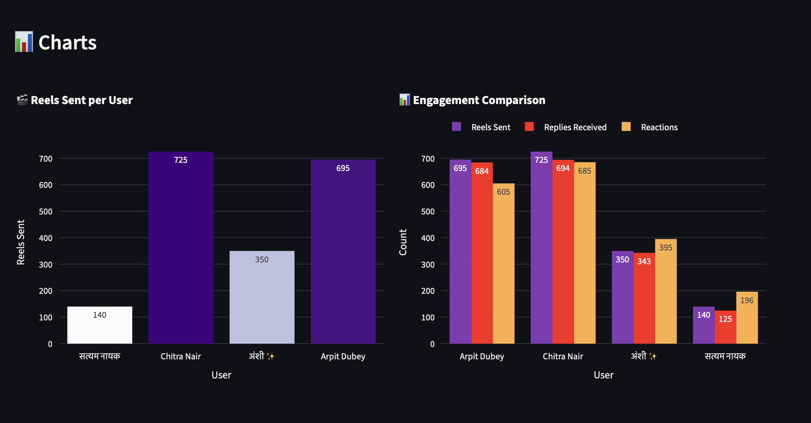
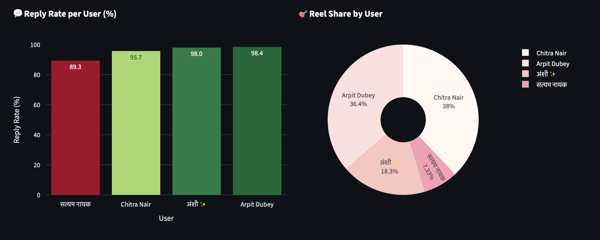

Counts Reel Sends
Shows exactly how many reels each person sent in a chat.
IG Reel Analytics turns your Instagram export into objective numbers: who sent, who replied, who reacted, and how engaged each person really was.
Shows exactly how many reels each person sent in a chat.
Measures replies within 24 hours so response behavior is clear.
Breaks down who reacted to whose reels and how often.
Generates a simple score and reply rate to rank participation.
The shift from opinions to proof in one upload.
"I send the most reels." "You never react." "You only see and ignore." Without data, every chat turns into guesswork.

Reel sends, replies, reactions, reply rate, and engagement score are all visible in one place, chat by chat and user by user.

Real outputs after processing chat data.



Ready to settle the debate?
Open IG Reel Analytics